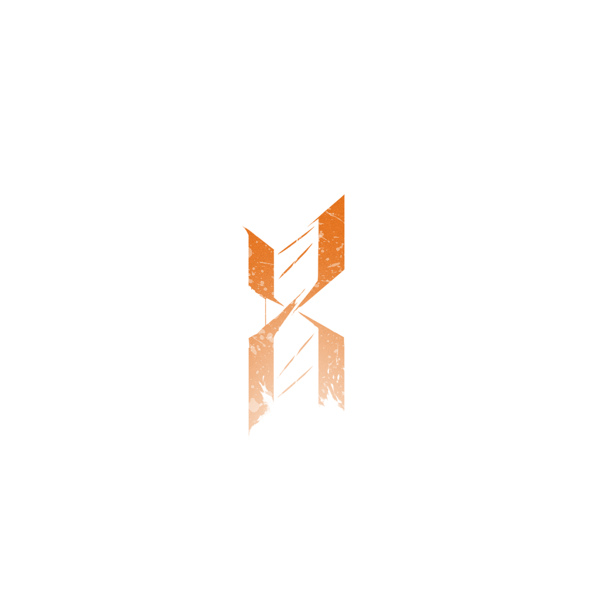
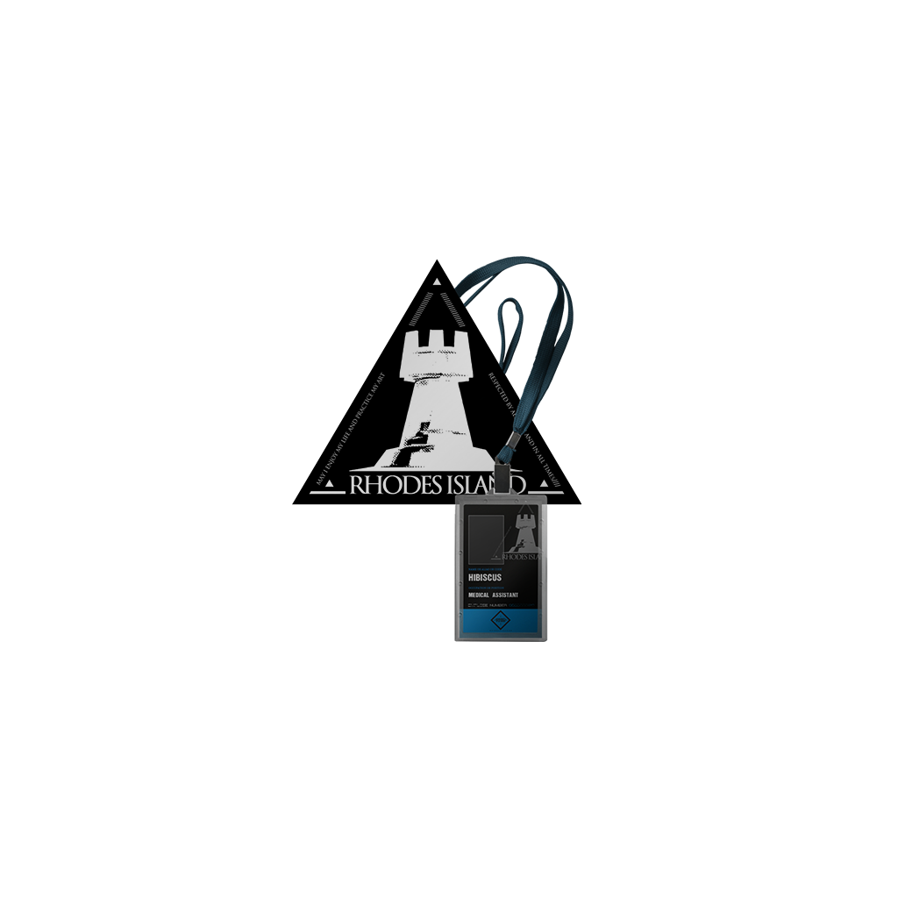

-

源石
ORIGINIUMS
大地被起因不明的天灾四处肆虐，经由天灾席卷过的土地上出现了大量的神秘矿物——“源石”。依赖于技术的进步，源石蕴含的能量投入工业后使得文明顺利迈入现代，与此同时，源石本身也催生出“感染者”的存在。 -

源石技艺
ORIGINIUM ARTS
源石被发现之后，人们发掘出一种通过它来施放一系列令物质改变原有性状的技术，这种技术被称为源石技艺，常被俗称为“法术”。源石技艺所运用的能源，一般被认为来自于源石本身。而人是否能施放法术，以及所能施放法术的形式、强度、效果等，通常受到先天具备的素质、后天对源石技艺的学习能力这两方面因素的制约。 -

整合运动
REUNION
无种族立场，极端排外的感染者组织。他们宣称“感染者应对自己的身份感到骄傲，积极去获取并使用属于自己的力量”。试图用最原始的手段去争夺世界的公正。以某座被摧毁的伟大城市为开端，医疗机构“罗德岛”的突然介入，令整个事态向着未知发展。 -

感染者
INFECTED
被源石所感染的人。理论致死率100% ，死亡时存在扩散传染性以及潜在危险能力，是各国隔离驱逐的目标。长久以来，没人告诉他们该如何渡过余生，如今伴随着一位颠覆者的出现，越来越多的感染者被纳入一场名为“整合运动”的反抗浪潮。 -

移动城邦
NOMADIC CITY
建造在可移动设备上的城市。频繁发生且破坏力巨大的天灾，迫使几乎所有的国家，都需要采用定期迁移家园与聚落的方式进行躲避。而移动城市，正是在这种需求下慢慢诞生的。人们在迁徙的过程中，尝试将建筑和种种装置安设在移动设备之上，并不断地扩大载具的规模。在文明与技术的演变之下，人们最终创造出了十分庞大的移动城市 -

罗德岛
RHODES ISLAND
罗德岛制药公司作为感染者问题专家，聘用感染者，深入危险地区，通过种种手段，已经成功解决了数起感染者引发的事件。而今，他们将面对史无前例的感染者暴乱。在各个势力间游走，发掘不为人知的内幕，抵挡感染者的疯狂进攻，你的决策将决定罗德岛的方向。